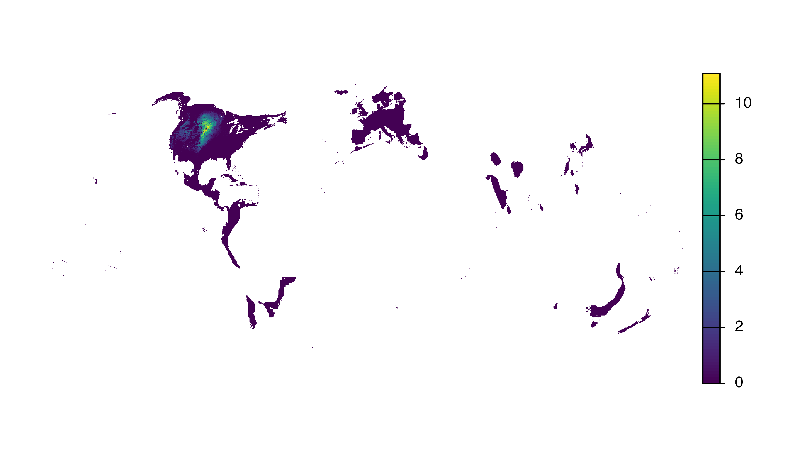
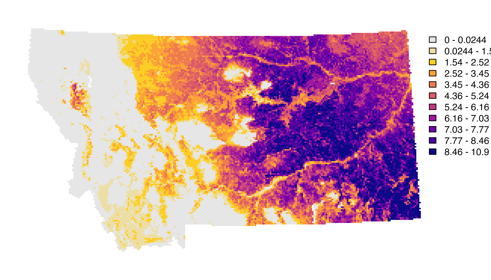

This vignette will cover a variety of common applications of the eBird Status Data Products including producing maps, plotting migration chronologies, and estimating the proportion of the population of a species within a region. In the introductory vignette we worked with the small example dataset for Yellow-bellied Sapsucker, which does not require a data access key to download. To provide more realistic examples, throughout this vignette we will use complete datasets for several species. As a result, a data access key is required to run the code in this vignette.
We start by loading the packages used throughout this vignette.
library(ebirdst)
library(terra)
library(sf)
library(dplyr)
library(tidyr)
library(rnaturalearth)
library(geodata)
library(ggplot2)
library(fields)
extract <- terra::extractMapping relative abundance
In this section, we’ll demonstrate how to make a simple map of relative abundance within a given region. As an example, we’ll make a map of breeding season relative abundance for Sage Trasher in Wyoming. The maps produced using this approach are suiteable for many applications; however, for high-quality publication-ready maps, it may be worthwhile using a traditional GIS environment such as QGIS or ArcGIS rather than R.
We start by downloading data for Sage Trasher and loading the
breeding season relative abundance raster. The pattern
argument to ebirdst_download_status() can be used to only
download the specific files we need.
# download the yellow-bellied sapsucker data
ebirdst_download_status("sagthr",
pattern = "abundance_seasonal_mean")
# load seasonal mean relative abundance at 3km resolution
abd_seasonal <- load_raster("sagthr",
product = "abundance",
period = "seasonal",
metric = "mean",
resolution = "3km")
# extract just the breeding season relative abundance
abd_breeding <- abd_seasonal[["breeding"]]The simplest way to map the seasonal relative abundance data is to
use the built in plot() function from the
terra package.
plot(abd_breeding, axes = FALSE)
Clearly this approach doesn’t work out of the box! There are a wide variety of issues that we’ll tackle one at a time.
Cropping and masking
All raster data downloaded through this package are defined over the
same global grid, regardless of the range of the individual species. As
a result, mapping these data will produce a global map by default.
However, Sage Thrasher only occurs in the western United States, which
is barely visible in the global map. We need to constrain the extent of
our map to make it more useful. For this example, we’ll download a
boundary for Wyoming (a state in the United States that harbours a large
proportion of the breeding population of Sage Thrasher) and use it to
crop and mask the relative abundance data. If you have a region defined
in a Shapefile or GeoPackage you can instead load that regional polygon
using read_sf().
# wyoming boundary
region_boundary <- ne_states(iso_a2 = "US", returnclass = "sf") |>
filter(name == "Wyoming")
# project boundary to match raster data
region_boundary_proj <- st_transform(region_boundary, st_crs(abd_breeding))
# crop and mask to boundary of wyoming
abd_breeding_mask <- mask(abd_breeding, region_boundary_proj) |>
crop(region_boundary_proj)
# map the cropped data
plot(abd_breeding_mask, axes = FALSE)
Projection
The raster data are all provided in the same equal area sinusoidal projection as NASA MODIS data. While this projection is suitable for analysis, it is not ideal for mapping since it introduces significant distortion. Instead, it’s best to select an equal area projection tailored to your region. A good general purpose choice is a Lambert’s azimuthal equal area projection centered on the focal region. This can be defined programmatically as follows.
# find the centroid of the region
region_centroid <- region_boundary |>
st_geometry() |>
st_transform(crs = 4326) |>
st_centroid() |>
st_coordinates() |>
round(1)
# define projection
crs_laea <- paste0("+proj=laea +lat_0=", region_centroid[2],
" +lon_0=", region_centroid[1])
# transform to the custom projection using nearest neighbor resampling
abd_breeding_laea <- project(abd_breeding_mask, crs_laea, method = "near") |>
trim()
# map the cropped and projected data
plot(abd_breeding_laea, axes = FALSE, breakby = "cases")
Abundance bins
The relative abundance data are not uniformly distributed, which can
lead to challenges distinguishing areas of differing levels of
abundance. This is especially true for highly aggregatory species like
shorebirds and ducks. To address this, we’ll use a quantile bins for the
map, where each color in the legend corresponds to an equal number of
cells in the raster. We’ll define these bins excluding zeros, then
assign a separate color to the zeros. We can also use the function
abundance_palette() to get the same set of colors we use in
the legends on the eBird Status and Trends website.
# quantiles of non-zero values
v <- values(abd_breeding_laea, na.rm = TRUE, mat = FALSE)
v <- v[v > 0]
breaks <- quantile(v, seq(0, 1, by = 0.1))
# add a bin for 0
breaks <- c(0, breaks)
# status and trends palette
pal <- ebirdst_palettes(length(breaks) - 2)
# add a color for zero
pal <- c("#e6e6e6", pal)
# map using the quantile bins
plot(abd_breeding_laea, breaks = breaks, col = pal, axes = FALSE)
Basemap
Finally, we’ll add state and country boundaries to provide some
context and generate a nicer legend. The R package
rnaturalearth is an excellent source of attribution free
contextual GIS data.
# natural earth boundaries
countries <- ne_countries(returnclass = "sf") |>
st_geometry() |>
st_transform(crs_laea)
states <- ne_states(iso_a2 = "US", returnclass = "sf") |>
st_geometry() |>
st_transform(crs_laea)
# define the map plotting extent with the region boundary polygon
region_boundary_laea <- region_boundary |>
st_geometry() |>
st_transform(crs_laea)
plot(region_boundary_laea)
# add basemap
plot(countries, col = "#cfcfcf", border = "#888888", add = TRUE)
# add relative abundance
plot(abd_breeding_mask,
breaks = breaks, col = pal,
maxcell = ncell(abd_breeding_laea),
legend = FALSE, add = TRUE)
# add boundaries
lines(vect(countries), col = "#ffffff", lwd = 3)
lines(vect(states), col = "#ffffff", lwd = 1.5, xpd = TRUE)
lines(vect(region_boundary_laea), col = "#ffffff", lwd = 3, xpd = TRUE)
# add legend using the fields package
# label the bottom, middle, and top
labels <- quantile(breaks, c(0, 0.5, 1))
label_breaks <- seq(0, 1, length.out = length(breaks))
image.plot(zlim = c(0, 1), breaks = label_breaks, col = pal,
smallplot = c(0.90, 0.93, 0.15, 0.85),
legend.only = TRUE,
axis.args = list(at = c(0, 0.5, 1),
labels = round(labels, 2),
col.axis = "black", fg = NA,
cex.axis = 0.9, lwd.ticks = 0,
line = -0.5))